Marketplace marocaine en microservices — .NET 10 et Entity Framework Core
Compte rendu d'avancement
| Module | SUP351 · Développement avancé des applications · SupMTI Oujda |
| Enseignant | Pr Ihababdelbasset Annaki |
| Étudiant | Badre |
| Stack | .NET 10 LTS, ASP.NET Core, EF Core 10 (Npgsql), PostgreSQL 16 — accord de l'enseignant du 19/11/2026 (ADR-000) |
| Version du document | v2 · 20/11/2026 |
| Tâche | Sprint | État | Preuve |
|---|---|---|---|
| 1. Socle du dépôt (structure, conventions, CI, ADR) | 0 | Terminée | Build 0 avertissement |
| 2. Service Catalog (US-01, US-02, US-03) | 1 | Terminée | 49 tests verts |
| 3. Service Inventory et vente flash (US-10, US-11, RG-01, RG-03) | 1 | Terminée | 500 achats → 0 survente |
| 4. Cart (Redis), passerelle YARP, Docker Compose (US-05) | 1 | Terminée | Parcours via :8080 |
| 5. Lancement par F5 dans Visual Studio (Aspire) | 1 | Terminée | 4 services « Running » |
| Total | 93 tests verts |
Objectif. Mettre en place un monorepo .NET propre que tous les services suivront : conventions communes, versions de paquets centralisées, intégration continue et premières décisions d'architecture.
| Élément | Contenu |
|---|---|
Souqly.slnx, global.json | Solution unique, SDK .NET 10 figé pour toute l'équipe et la CI. |
Directory.Build.props | Nullable activé, analyseurs Roslyn « latest-recommended », avertissements traités comme des erreurs. |
Directory.Packages.props | Versions NuGet centralisées (équivalent du POM parent Maven) ; chaque version vérifiée sur nuget.org. |
.editorconfig, .gitignore | Style de code vérifié au build ; .env et secrets exclus de Git. |
.github/ | Pipeline ci.yml (format, build, tests, couverture, gitleaks), modèles de PR, de story et de bug, Dependabot. |
docs/adr/ | ADR-000 (.NET au lieu de Java), ADR-001 (microservices), ADR-002 (monorepo). |
README.md, CONTRIBUTING.md | Démarrage, structure, conventions Git et de code, ajout d'une migration EF. |
Souqly.Chassis | Bibliothèque transverse minimale : erreurs RFC 9457 avec traceId, pagination, utilisateur courant, sondes de santé. |
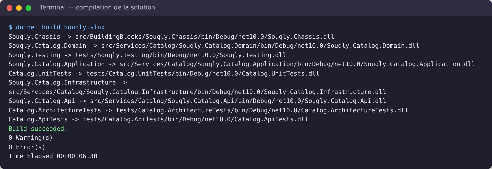
Objectif. Livrer le catalogue : parcours public paginé (US-01), fiche produit (US-02) et gestion des produits par le vendeur (US-03), avec les règles RG-02, RG-07 et RG-08.
| Projet | Rôle |
|---|---|
Souqly.Catalog.Domain | Entité Product qui protège ses règles : prix entre 0,01 et 50 000 MAD avec 2 décimales, statuts Brouillon → Actif → Archivé, propriété du vendeur. Aucune dépendance technique. |
Souqly.Catalog.Application | ProductService (cas d'usage), validateurs FluentValidation, contrats d'API (MoneyDto : montant en chaîne + devise). |
Souqly.Catalog.Infrastructure | CatalogDbContext EF Core + Npgsql, noms en snake_case, NUMERIC(12,2), contrainte CHECK price > 0, concurrence optimiste sur xmin, migration InitialCatalog et 8 catégories de référence. |
Souqly.Catalog.Api | Endpoints minimaux, autorisation par rôle, documentation OpenAPI + Scalar, sondes /health/live et /health/ready. |
| Verbe | Chemin | Accès | Story |
|---|---|---|---|
| GET | /api/v1/products?category=&minPrice=&maxPrice=&q=&sort=&page=&size= | public | US-01 |
| GET | /api/v1/products/{id} | public (brouillon : propriétaire seul) | US-02 |
| POST · PUT · DELETE | /api/v1/products[/{id}] | VENDOR propriétaire | US-03 |
| GET | /api/v1/vendor/products | VENDOR | US-03 |
| GET | /api/v1/categories | public | US-01 |
| GET | /internal/v1/products/prices?ids= | client technique | RG-02 |
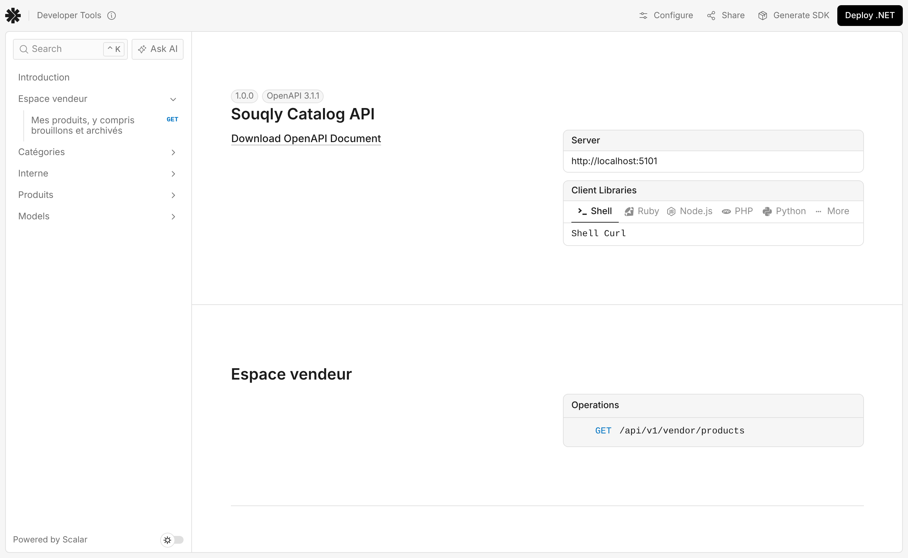
Le service tourne contre PostgreSQL 16. Les quatre appels montrent la création par un vendeur, le contrôle d'accès objet (un autre vendeur reçoit 404 pour ne pas révéler l'existence du produit), le refus d'un client et une erreur de validation au format RFC 9457.
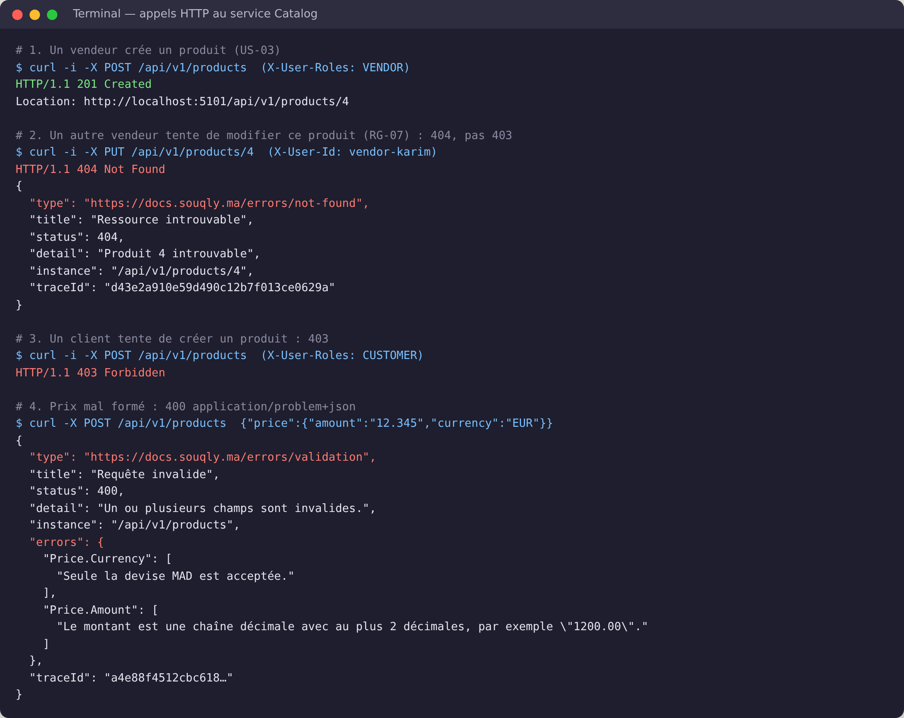
| Projet de tests | Nombre | Ce qui est vérifié |
|---|---|---|
Catalog.UnitTests | 31 | Règles du domaine (prix, statuts, propriété), cas d'usage avec dépôt simulé (NSubstitute), validation des requêtes, tri en liste blanche. |
Catalog.ApiTests | 16 | Service complet via WebApplicationFactory sur un vrai PostgreSQL 16 (migrations appliquées) : 201/400/401/403/404/409/422, pagination plafonnée à 100, sous-catégories, prix interne, santé. |
Catalog.ArchitectureTests | 2 | Le domaine ne dépend ni d'ASP.NET Core ni d'EF Core ; l'application ne dépend pas de l'infrastructure (NetArchTest). |
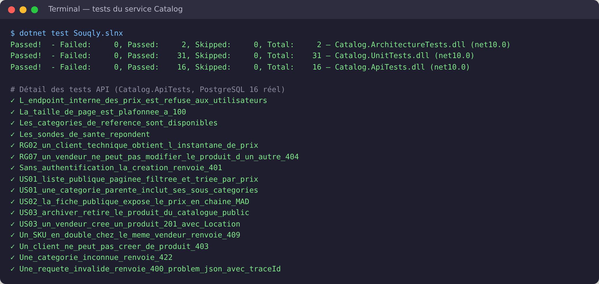
X-User-Id, X-User-Roles), interdits en production. Keycloak et JWT arrivent au Sprint 2 sans changer les endpoints, qui ne lisent que sub et les rôles.SOUQLY_TEST_POSTGRES.Objectif. Gérer le stock des vendeurs (US-10) et réserver le stock pendant le paiement (US-11) sans jamais vendre un article absent, même sous 500 achats simultanés (RG-01). Les réservations expirent après 15 minutes (RG-03).
| Élément | Détail |
|---|---|
| Domaine | StockItem (physique, réservé, disponible = physique − réservé) et Reservation (statuts Active → Committed / Released / Expired, expiration à 15 min). |
| Réservation atomique | ExecuteUpdateAsync génère UPDATE stock_items SET reserved = reserved + @q WHERE product_id = @id AND on_hand - reserved >= @q : PostgreSQL vérifie et écrit en une seule opération (ADR-007). |
| Garde-fous en base | Contraintes CHECK : on_hand >= 0, reserved >= 0, reserved <= on_hand. Index unique (order_id, product_id) pour l'idempotence. |
| Tout ou rien | Lignes triées par produit (pas d'interblocage), transaction annulée si une seule ligne manque de stock. |
| Compensations | release (paiement refusé, annulation) et commit (commande confirmée), toutes deux rejouables sans double effet. |
| Expiration | ReservationExpiryWorker (BackgroundService, toutes les 30 s) avec verrou consultatif PostgreSQL : une seule réplique travaille à la fois. |
| Endpoints | Publics : disponibilité. Vendeur : fixer, ajuster, consulter son stock. Internes (Ordering, puis Kafka au Sprint 3) : réserver, libérer, consommer. |
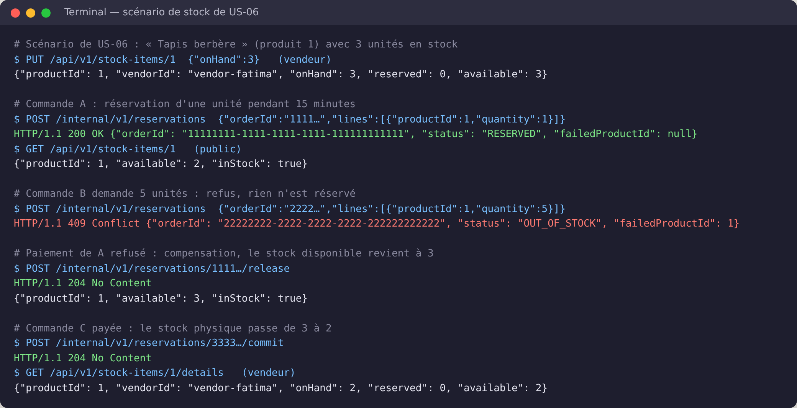
Le test FlashSaleTests crée un produit avec 100 unités puis lance 500 réservations au même instant, chacune dans sa propre connexion à PostgreSQL 16. Exigence du cahier des charges : 0 survente sur 500 achats concurrents pour 100 unités.
| Mesure | Attendu | Obtenu |
|---|---|---|
| Réservations acceptées | 100 | 100 |
Refus OUT_OF_STOCK | 400 | 400 |
| Stock réservé / physique | 100 / 100 | 100 / 100 |
| Disponible | 0 (jamais négatif) | 0 |
| Durée | — | ≈ 1,5 s |
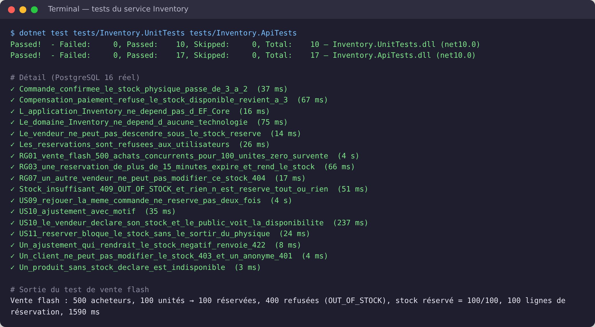
ProductCreated au Sprint 3.inventory.commands.v1) avec l'outbox au Sprint 3. La logique métier, elle, ne changera pas.Objectif. Terminer le Sprint 1 : panier conservé entre deux visites (US-05), passerelle comme point d'entrée unique, et environnement local qui démarre en une commande.
| Élément | Détail |
|---|---|
| Service Cart | Panier par client dans Redis (clé souqly:cart:{sub}), durée de vie 30 jours repoussée à chaque modification. Il ne stocke que des produits et des quantités : le prix sera lu dans le catalogue au moment de la commande (RG-02). Règles RG-04 : 1 à 10 unités par ligne, 20 lignes au plus. |
| Passerelle YARP | Routes vers Catalog, Inventory et Cart ; /internal/** toujours refusé ; limitation de débit par utilisateur (20 req/s, pointes à 40) avec réponse 429 + Retry-After ; en-têtes de sécurité ; CORS strict. |
| Documentation unique | La passerelle agrège les documents OpenAPI des trois services dans une seule page Scalar (http://localhost:8080/scalar). |
| Dockerfiles | Un par service : restauration en couche séparée, image finale aspnet:10.0, utilisateur non root, sonde --healthcheck intégrée (l'image n'a pas curl). |
| Docker Compose | PostgreSQL 16 (une base et un utilisateur par service, créés par init.sh), Redis, 3 services, passerelle. Seule la passerelle est exposée (8080). Démarrage ordonné par les sondes de santé, mémoire limitée par conteneur, secrets dans .env (non versionné). |
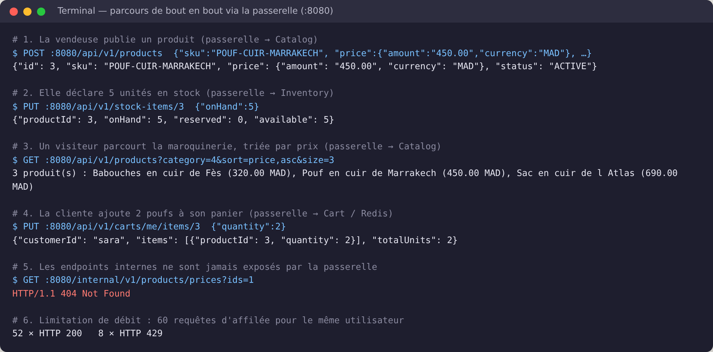
/internal et limitation de débit (429).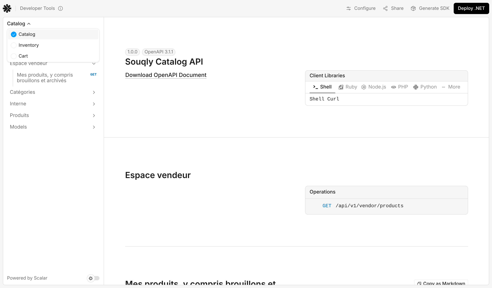
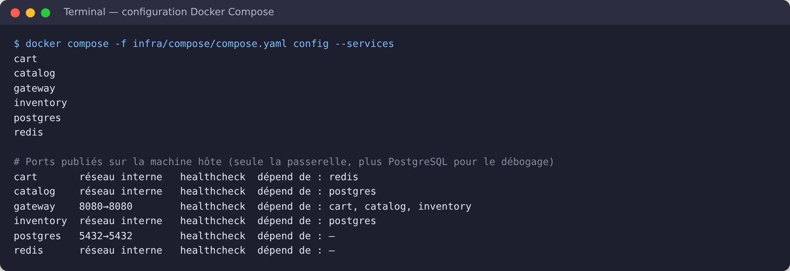
docker compose config), mais il n'a pas pu être lancé dans l'environnement de travail utilisé pour ce compte rendu : les registres d'images Docker y sont bloqués. Les services, eux, ont été exécutés et testés contre de vrais PostgreSQL 16 et Redis. Commande à lancer : docker compose -f infra/compose/compose.yaml up -d --build --wait.Le socle et les trois premiers services sont en place, compilés sans avertissement et couverts par 93 tests automatisés, tous verts, exécutés sur de vrais PostgreSQL 16 et Redis.
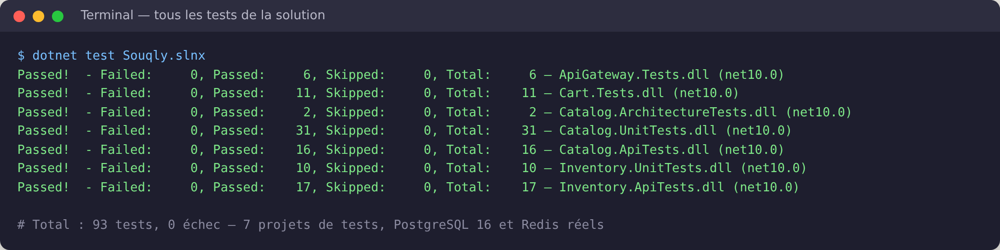
| Exigence de l'énoncé | État |
|---|---|
| Swagger UI agrégé à la passerelle | Fait (Scalar, figure 8) |
Un produit créé puis listé via localhost:8080 | Fait (figure 7) |
| Test de vente flash vert dans la CI (100 réservations sur 500) | Fait (figure 6) |
| Contrats OpenAPI de catalog, inventory, cart | Fait (contracts/openapi/) ; order au Sprint 2 |
| ADR-001, 002, 007 (+ ADR-000) | Faits |
| ADR-008 (découverte de services), diagrammes C4 niveaux 1 et 2 | À faire |
Tag v0.1.0 | Après le premier push GitHub |
main, vérifier que la CI passe, taguer v0.1.0.Objectif. Démarrer tout l'environnement d'un seul clic sur Run (F5) dans Visual Studio : bases de données, cache, services et passerelle, avec le débogueur attaché à chacun.
| Élément | Détail |
|---|---|
Souqly.AppHost | Projet de démarrage Aspire 13.6.5 qui décrit en C# toutes les ressources : PostgreSQL 16 (bases catalog_db et inventory_db), Redis 7, Catalog, Inventory, Cart et la passerelle. |
| Ordre de démarrage | Chaque service attend que sa base soit prête ; la passerelle attend que les trois services soient sains (/health/ready). |
| Configuration automatique | Aspire injecte les chaînes de connexion et les adresses des services dans la passerelle : aucun réglage à faire à la main. |
| Conteneurs persistants | PostgreSQL et Redis restent démarrés entre deux F5 : les lancements suivants prennent quelques secondes et les données sont conservées. |
| Traces OpenTelemetry | Ajoutées au chassis : chaque requête se suit de la passerelle jusqu'à la requête SQL dans le tableau de bord (préparation de US-19). |
| ADR-012 | Aspire pour le développement local, Docker Compose reste la référence pour la démo et le déploiement. |
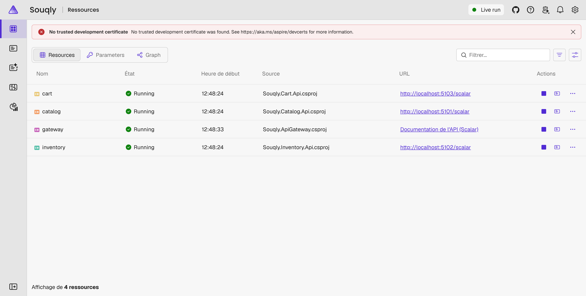
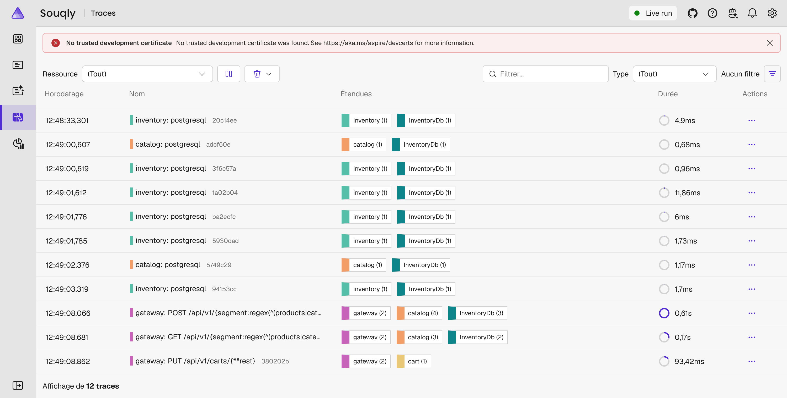
POST sur la passerelle traverse gateway → catalog → base de données, avec la durée de chaque étape.Souqly.slnx dans Visual Studio ; Souqly.AppHost est le projet de démarrage.